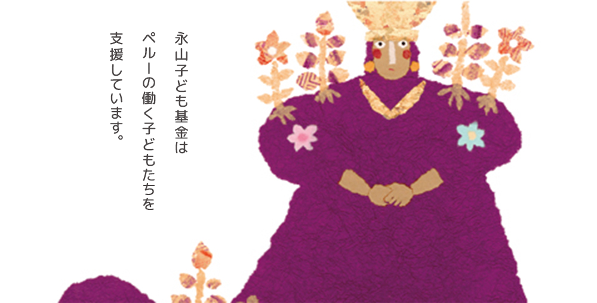

お知らせ
2019.4.1
ウェブサイトをリニューアルしました

ウェブサイトをリニューアルしました。永山子ども基金の活動内容の紹介や、活動への参加方法など、掲載情報も一新しました。今後、過去のコンサート写真等も随時追加予定です。
2018.12.3
「第３３回 東京弁護士会人権賞」を受賞しました

人権擁護活動に尽力した団体に授与される、「第３３回 東京弁護士会人権賞」を受賞しました。
＜大谷恭子弁護士の挨拶文＞
2019年1月11日、「東京弁護士会人権賞」授賞式―弁護士会館二階講堂（クレオ）にて
大谷：永山くんは死刑になる直前に、「貧しい子ども達、とくにペルーの子ども達に、印税を使ってほしい」と遺言を残しました。私が永山くんの遺骨を引き取りに行った時に、刑務官から「遺言があります」と言われて、驚きました。
永山くんは最期の瞬間まで、貧しい人達のことを思っていたのでしょう。
私達は、印税を送るもととして基金を立ち上げました。
永山くんが印税を意識したのは、『無知の涙』を執筆した時だったのでしょう。『無知の涙』の原型となったのは、彼が、なぜ人を殺めてしまったのか？を問い、書いた、漢字の練習帳のようなノートでした。それが出版されて、印税は被害者の家族に送られました。
（死刑囚となっても）永山くんの原稿用紙は、床から（高さ）１メートル以上に達していました。しかし死刑が確定していたので、厳しい管理下におかれ、それらの原稿が外に出ることはなかったのです。（後に私達は）それらを出版しました。彼の遺言通りに、ペルーの子ども達、つまり路上の子ども達、働く子ども達に印税を送りました。（永山くんが指していたのは）アフリカで飢えている子ども達ではなかったようです。
印税がなくなってからは、私達はコンサートを行い、その収益金をペルーの働く子ども達に送金しています。
今回の受賞にあたり、ペルーの子ども達が本当に喜んでくれています。「永山は死刑の瞬間まで（自分達を）忘れないでいてくれた、思い出してくれた」と。
この賞は、当時、永山くんに対して「生きろ」と言ってくれたマスコミ、「もう一度裁判をやり直す」と言ってくれた弁護士の方々にささげます。石川先生は精神鑑定をしてくれました。精神鑑定でいうところの「PTSD」「心神耗弱」は最終的に裁判では受け入れられずでしたが…しかし、東京高裁の船田裁判長はこれを受け入れてくれました。このかん、多くの人達が、「生きろ」「生きるための裁判をしよう」と言ってくれたのです。今回の受賞は、「生きろ」と一度でも声をかけてくれた方々にささげます。
ペルーの子ども達は「僕達は、永山くんのようにはならない」と言います。
この活動をするにあたり、若いスタッフの方々、名刺広告に協力してくれた弁護士の方々。1968年の事件を、若い人達と…ちょうどあの時の永山くんと同じ年代の若い人達が北千住パブリック（弁護士事務所）にいました。彼らも、それぞれの永山くんと出会って、一生懸命にやっています。
人を殺す不条理さも共有したいです。今年に行う永山基金のコンサートでは、片山さんと「被害」と「加害」について話し合いたいです。
この受賞を、永山くんも喜んでくれていると思う。彼は貧しい子ども達の塾を作りたいと言っていたのです。
永山くんに代わって「ありがとう」と言います。ありがとうございました。